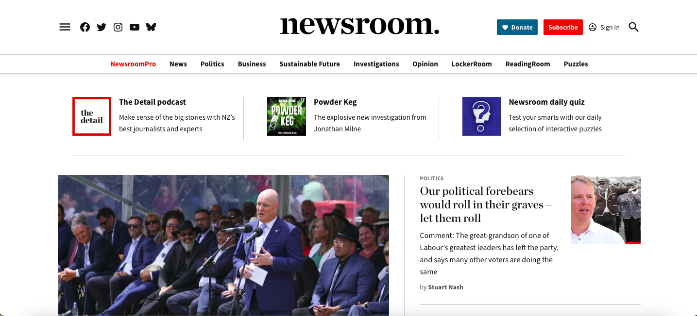
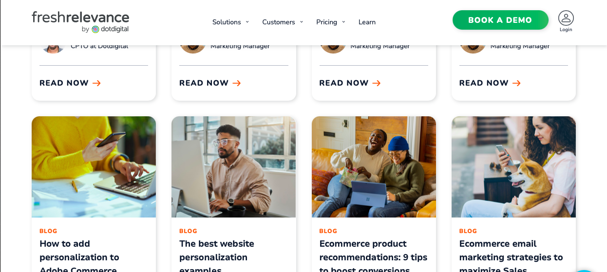
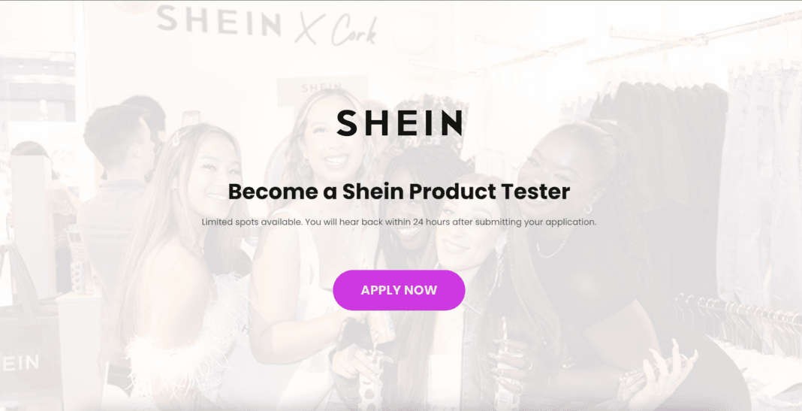
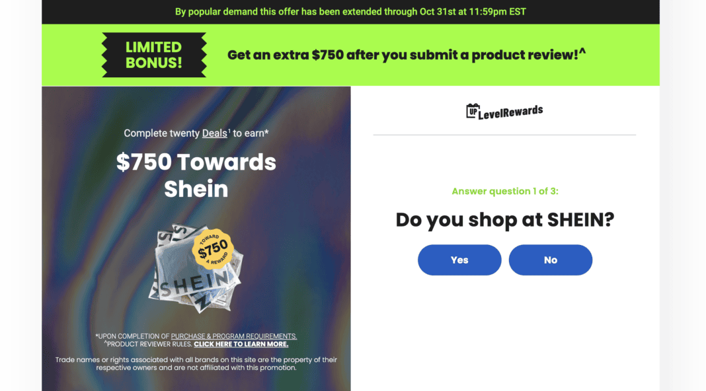
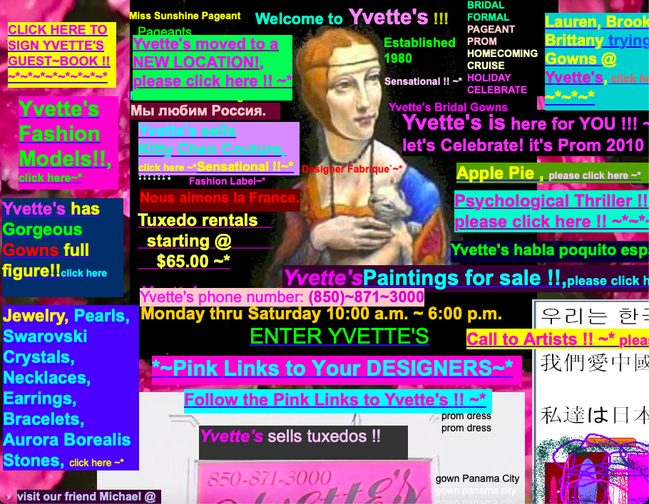
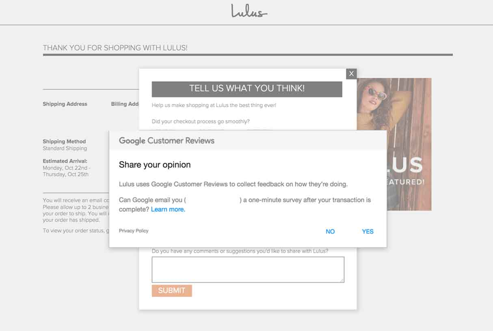

One aspect of web design that positively affects the community is creating accessible websites - specifically, taking measures to ensure those using screen readers can clearly view content on a website. An example of this in practise, depicted below, is Newsroom, which have simple yet clear headings for each link in the navigation bar and the headlines. Creating descriptive headings that outline what sections of the news each navigation button corresponds to not only make it easier for assistive technologies to transcribe content to their user, it also helps a sighted user know exactly which buttons will lead to which types of articles, benefitting both disabled and able-bodied users.
Another aspect is features that provide ease of use, which avoid triggering the anger and frustration responses in users which may lead to them not utilising it. A feature which makes it quicker for users to access information they need is including a sticky navigation bar, meaning that users won't have to scroll all the way back up the website if they want to access a different portion of the website. Below is an example of the sticky navigation bar in freshrelevance.com - even after scrolling to the middle of the page, the navigation bar still sits at the top of the screen, letting me explore deeper into the website if I don't find what I'm looking for on the front page. This works especially well with users who are researching and need to browse articles quickly.
Finally, responsively designed websites are crucial in positively impacting their users. Consumption of media on mobile phones has grown 460 percent from 2011 to 2021 and is projected to grow further, meaning it is essential for a mobile user's experience to be as streamlined as a desktop user's experience, making content accessible on any device. Below is an example, etsy.com, accessed from both a phone and a computer - the websites are almost identical, but the navigation bar is removed and header compressed as it would be difficult to access buttons with fingers otherwise.


An aspect of web design that can negatively impact users are dark patterns, specifically fake social proof, which misleads users by making the website look more credible than it actually is with fake reviews and deliberately similar iconographies to popular and trusted brands. One example of fake social proof is sheingivesback.com, a website with a professional look and the Shein logo to bait users into giving out their details to claim vouchers that don't exist. Below, the pages of the website are clean and deceptively professional, using modern web design techniques such as a landing page and built in user surveys, which lull users into a false sense of security to think they are actually claiming rewards from a trusted brand.
 Another negative aspect is using poor colour contrast throughout the website. Making the text and background similar colours or extremely bright and difficult to see not only makes it inaccessible for those with reduced vision to see the text, but can also make it overstimulating for neurodiverse users, thus creating an unwelcoming environment for many users. Below is Yvette's Bridal Formal, a website featuring many examples of excessively bright and high contrast text with coloured squares behind it that overstimulate users easily. Effective websites should instead aim to use the colour contrast ratio of at least 4.5:1 to ensure information is readable.
Finally, unnecessary and excessive popups negatively impact a user's experience with a website, which can either trigger an anger response in some users, or in the case of shopping websites, distract the user with deals on items they don't already need, thus causing overconsumption. One example is Lulus, which upon ending a transaction prompts users with two lightbox popups to review their purchase, forcing users to manually close both popups or sit through two review processes in order to go back to browsing. This likely makes users annoyed at the process of ending a transaction, and therefore less likely to shop again if they know they have to go through this at the end. A more effective approach would be to limit the popups to only one, and in a place where users wouldn't be already occupied.
698 words, not including headings and subheadings or the bibliography.